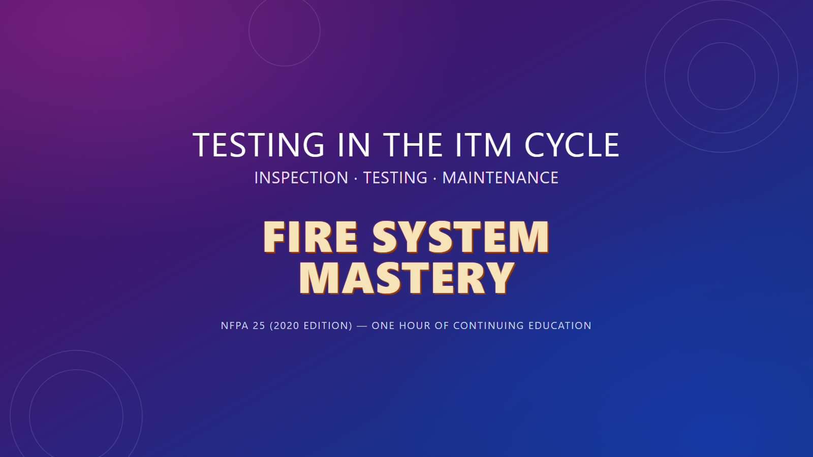

FIRE SYSTEMMASTERY
Illinois OSFM Approved
Continuing Education · 1 Hour CE Credit
Continuing Education · 1 Hour CE Credit
Watch all slides with narration, then take the 12-question test to earn your certificate.

Answer all 12 questions, then submit.
The course is free. The Illinois OSFM certificate is the paid part — it carries your name, your license number and Maurice's signature, and it's what you hand in at renewal.
Certificates are issued by hand, usually the same day. Click below and tell me the name and license number that should appear on it.
Questions first? Email maurice@firesystemmastery.com.